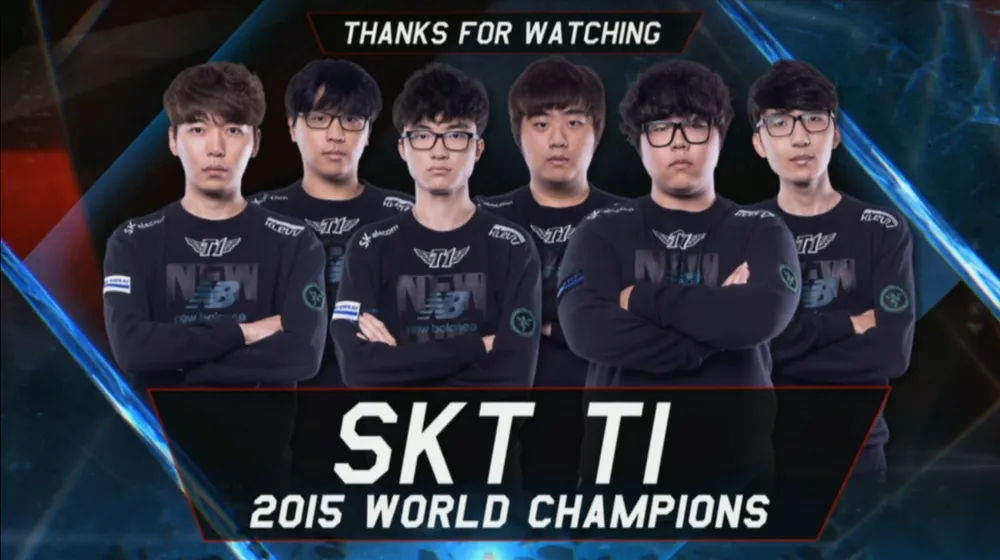
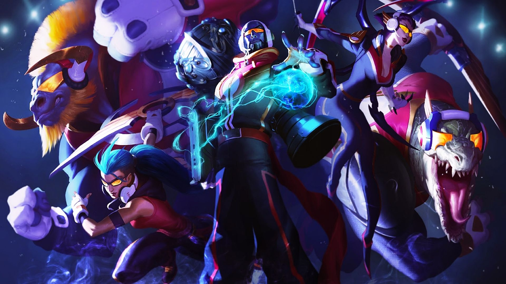

After a disapointing 2014 and the dissolvment of sister teams SKT would take Bengi and Faker and combine them with their sister teams side laners Toplaner Marin, Botlaner Bang, and Support Wolf. Despite Faker's status they would also retain Midlaner Easyhoon who would split time with Faker.
Eventually at the world championships Faker would claim the main starting spot. While he had previously been known for more flashy assasin characters, recent changes mean they had been rendered mostly obsolete forcing faker to adapt, and adapt he did. 2015 was defined by Fakers Ryze that steamrolled the entire tournament.
Although Faker was a important piece toplaner Marin would get the Worlds MVP trouphy and was considered the main carry of the roster for most of the year. Marin would get picked up by a Chinese team in the offseason that offered him a decently large sum.